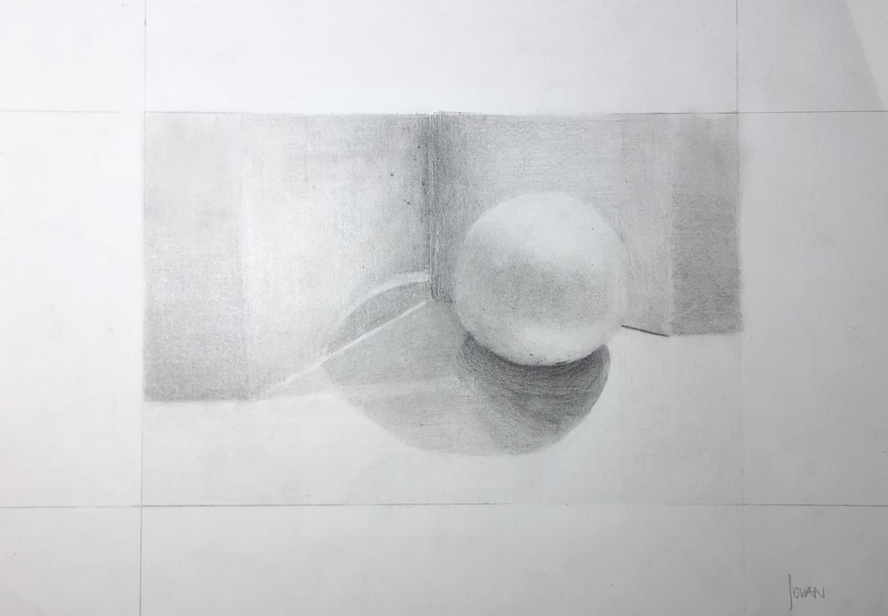
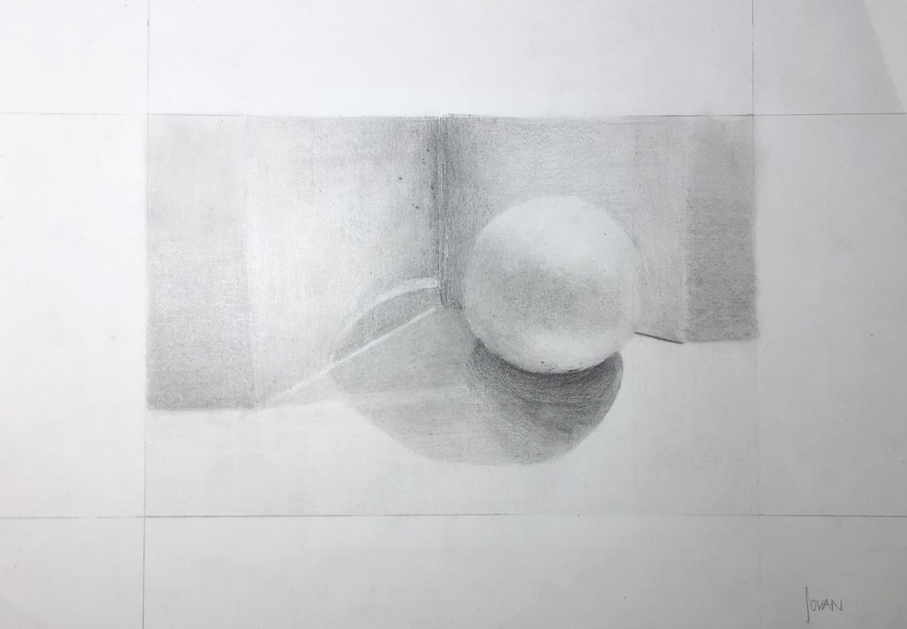

ÜBER MICH
Hallo Welt, mein Name ist Jovan. Ich bin 16 Jahre alt und komme aus St.Gallen. Momentan besuche ich den Gestalterischen Vorkurs an der GBS. Vor dem Vorkurs ging ich die Sekundarstufe im Oberstufenzentrum Zil. Ich habe mich für die Richtung Gestaltung und Design entschieden, da ich schon von jung aus immer kreativ und voll mit Ideen war. Schon in der Oberstufe habe ich angefangen, mit Programmen wie Blender, zu gestalten. Im Vorkurs haben wir den Zugang zur Creative Cloud, einige Programme wie Lightroom, Photoshop und Illustrator waren mir bekannt. Ich bin immer sehr motiviert neue Dinge zu lernen und verstehe das Gelernte auch schnell. Ich habe schon ein Logo für meine Schwester erstellt, die neben ihrem Hauptberuf, fotografiert. Themen wie Marketing, Finanzen und Design begeistern mich sehr. Ich lese gerne, auch darüber. Momentan lese ich das Buch „The Universal Principles of Design“. Sport treibe ich ebenfalls gerne. Vier mal in der Woche gehe ich ins Fitness und bei schönem Wetter treffe ich mich mit meinen Freunden um Basketball zu spielen. In der Zukunft erhoffe ich mir einen Beruf indem ich viel neues lernen kann und meier Kreativitär freien Lauf geben kann. Auf dieser Webseite, die ich programmiert habe, sehen sie meine Arbeiten die ich ebenfalls gemacht habe.
ARBEITEN


 

Weitere Websites
Klicke auf das Bild, um die Website zu besuchen.